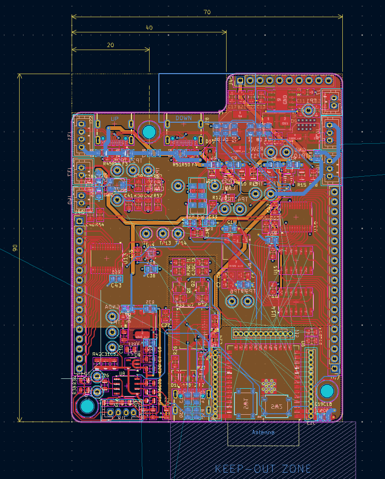
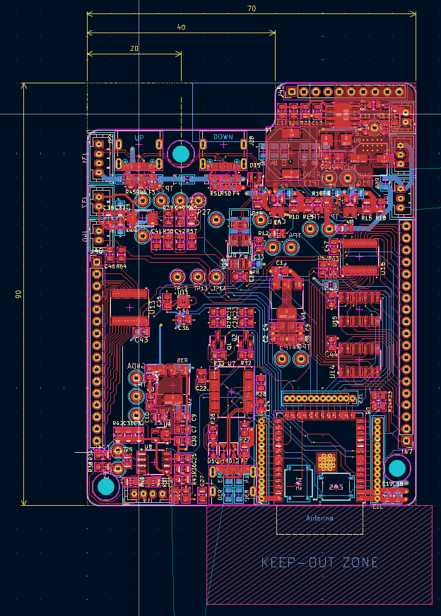
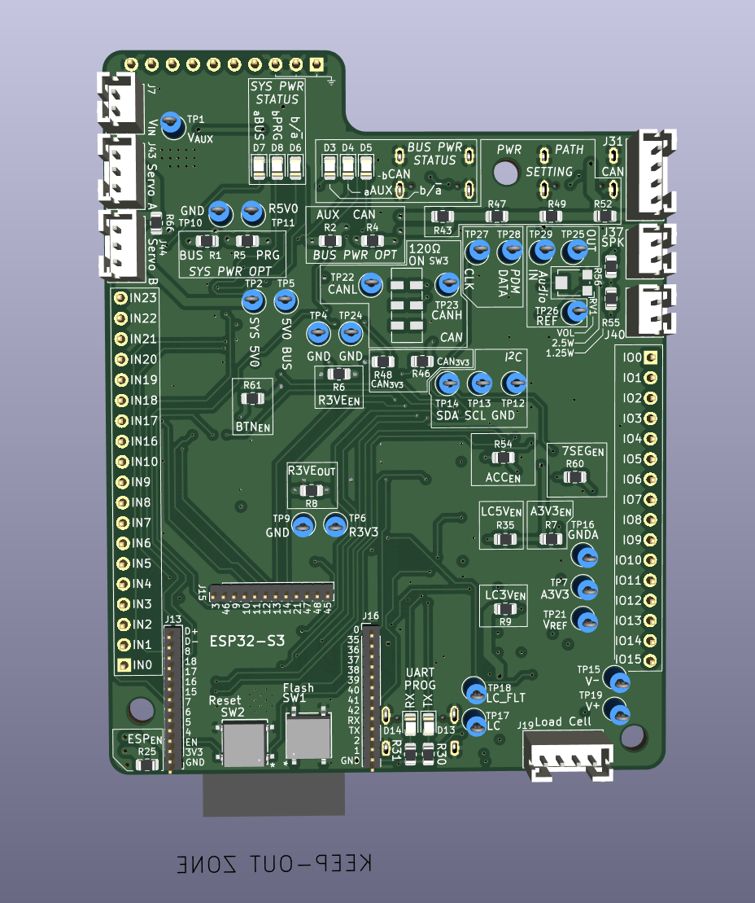
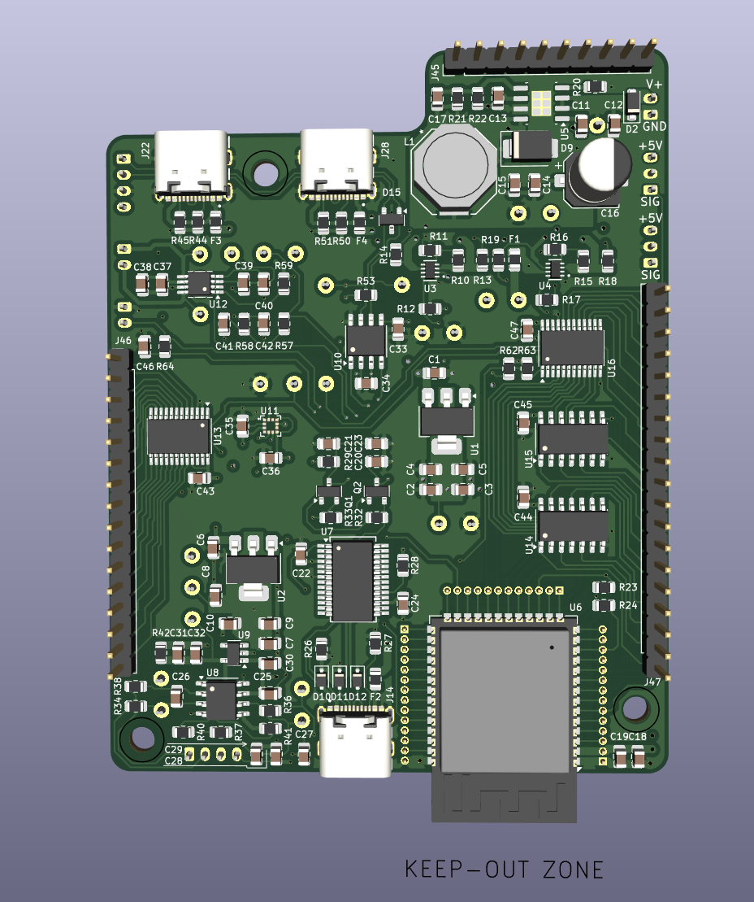
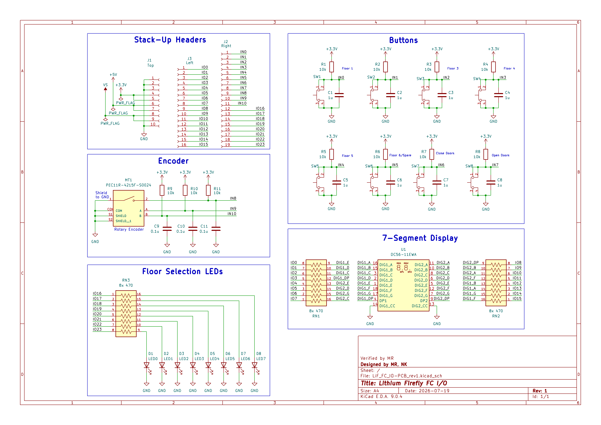
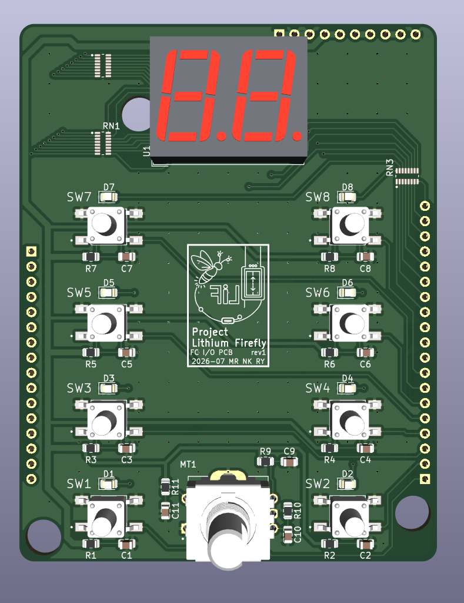
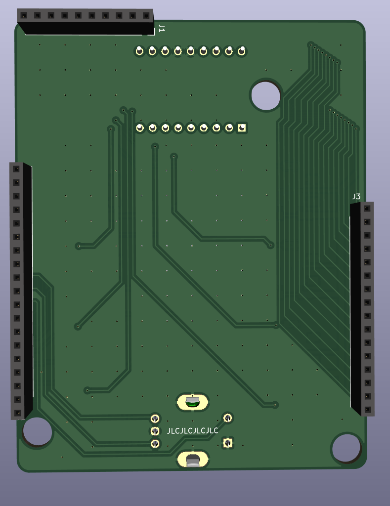

PCB Layout Session 6
I continued routing the Service PCB. The component layout was nearly complete, and most subcircuits had been routed. The remaining work was to connect each subcircuit to the ESP32-S3 MCU.

I reassigned several ESP32-S3 pins to simplify the final GPIO routing. In particular, I swapped the GPIO assignments for the AUX and SYS power OR-ing status signals.
I then completed the initial routing.

The first design-rule check reported 87 errors and 394 warnings. Based on previous manufacturing experience, I modified the custom silkscreen rule as follows:
(rule "Silkscreen text"
(layer "?.Silkscreen")
(condition "A.Type == 'Text' || A.Type == 'Text Box'")
(constraint text_thickness (min 0.13mm))
(constraint text_height (min 0.8mm))
After this change, the number of DRC warnings decreased to 123. I resolved all remaining DRC issues and added copper pours on the top and bottom layers to use the available copper more effectively. I did not add stitching vias.
I then began working on the silkscreen:
- The front silkscreen primarily contains reference designators used during PCB assembly.
- The rear silkscreen identifies the configuration resistors, stack-up-header pinout, and connector names and functions.


I traced the project logo in the Obsidian Excalidraw plugin and converted it into an SVG file for the PCB silkscreen.
I/O PCB Design and Layout
I started working on the I/O PCB by correcting its schematic diagram, which had previously been imported quickly and contained many issues.
TODO: Add a link to the finalized schematic PDF document.

After correcting the schematic, I completed the I/O PCB layout and routing.


The 7-segment display slightly overlaps the clearance hole for the M3 socket-head cap screw. However, the hole diameter is 6 mm, while the screw-head diameter is 5.4 mm, so the available clearance should be sufficient.